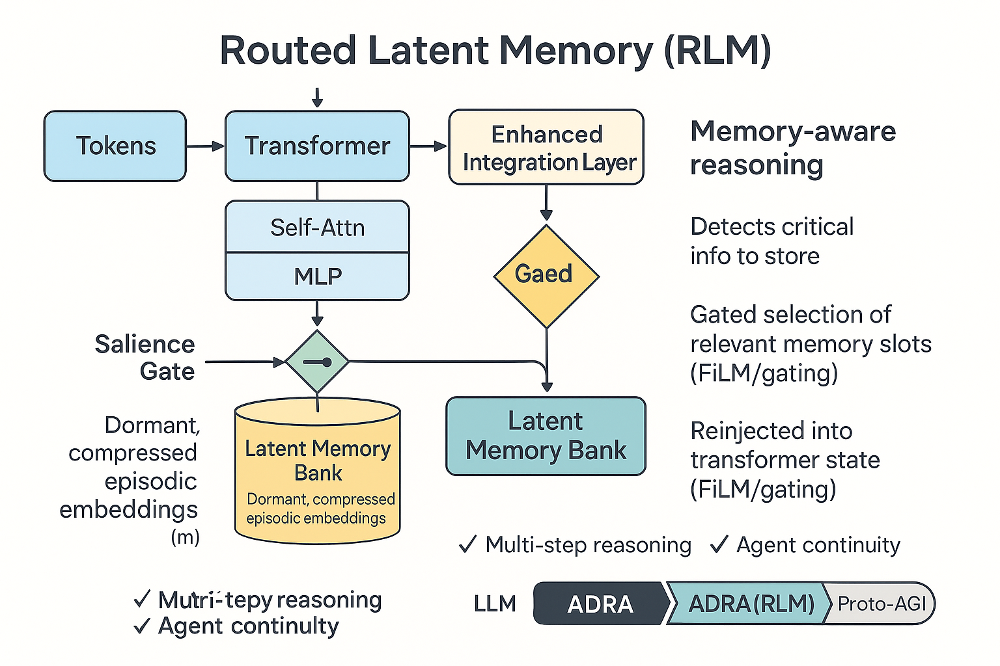
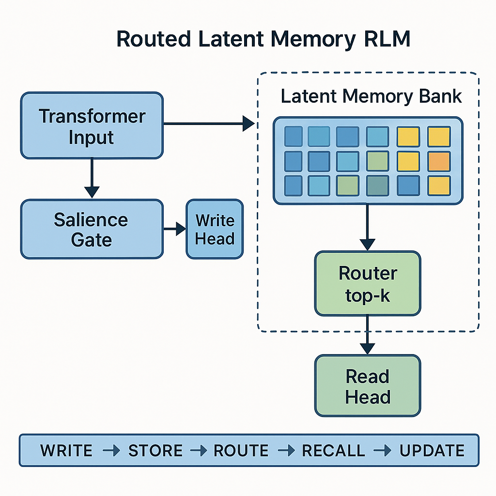

ADRA “Routed Latent Memory” (RLM)
Abstract
ADRA “Routed Latent Memory” (RLM)
⸻ ## 1. What is ADRA?
ADRA (Autonomous Deep Reasoning Agent)
ADRAs are next-phase LLM-based systems that retain pattern recognition as a core but expand cognition through advanced autonomous planning, deep scientific hierarchical reasoning , multi-step task decomposition, persistent memory-based attention, and Meta verification and reflection.
They can operate across extended time horizons, recover from failure states, refine internal plans, and orchestrate tools and simulations.
making them incredible agents.
⸻
⸻
ABSTRACT (Version 1 — High-Level, ADRA-Aligned)
Abstract
Current transformer-based LLMs are fundamentally bounded by context window architecture, which forces them to relearn, re-attend, or forget information outside immediate token ranges. This makes coherent long-term reasoning, multi-step agentic execution, and deeply contextual task continuity impossible at ADRA scale.
Routed Latent Memory (RLM) is a proposed auxiliary memory architecture that stores compressed latent embeddings of interaction history inside a set of dormant “memory blocks,” which are only activated via trainable routing layers. Unlike standard attention, RLM does not treat memory as active context, but as selectively retrievable episodic states that can hold millions of tokens in compressed latent form without incurring quadratic compute costs.
This document presents RLM as a practical pathway toward transformer models with deterministic long-range recall, forming a necessary building block for ADRA-level agents and early-stage proto-AGI.
⸻

⸻
Section 1 — Why Transformers Fail at Long-Range Recall (Linear Narrative Version)
Modern transformer-based LLMs process information in a single continuous stream of tokens within a bounded context window. Even with extended contexts (e.g., 128K or 1M tokens), these models do not retain information; they merely attend to what is present in the active sequence. Once a token falls outside the window, it is functionally erased from the model’s working state.
Even within the window, two deep limitations emerge:
1.1. Quadratic Attention Makes Recall Expensive and Fuzzy
Self-attention computes all token-to-token interactions with quadratic complexity. This means that forcing the model to reference distant content is computationally expensive and generally discouraged during training due to optimization pressures. As a result, long-range recall often emerges only weakly and inconsistently.
1.2. Transformers Do Not Build Persistent Internal Representations Over Time
Transformers are stateless between prompts. Every user interaction begins with a zeroed state, and memory must be re-fed manually via system/user prompting or external retrieval systems. This makes multi-step tasks, agents, and reasoning across multiple dialogue episodes brittle and heavily scaffolded.
1.3. Scaling Context Windows Is a Dead-End Solution
Vastly increasing context windows (e.g., to millions of tokens) does not solve the underlying issue — the model is still reading this information passively rather than writing selectively to persistent memory. Furthermore, long-context models struggle with retrieval fidelity, often showing “lost in the middle” effects or attending to irrelevant regions.
1.4. Human-Like Task Continuity and Memory Is Impossible Under Pure Attention
Tasks requiring memory of multi-step instructions (like agentic execution over hours or days), autobiographical recall (e.g., “what plan did I choose earlier?”), or narrative consistency (e.g., long-form story continuity) break because nothing is ever committed to memory. Everything must be constantly re-provided or retrieved externally.
1.5. Current “Memory Systems” Are Wrapper-Level Hacks, Not Architectural Solutions
Existing solutions like RAG, vector DBs, or external “episodic memory stores” live outside the model and rely on surface-level semantic matching. They do not embed memory into the model’s world representation or enable deterministic cognitive recall. These are retrieval hacks, not internal cognition.
⸻
⸻

⸻
why This Matters for ADRA and Beyond
Autonomous Deep Reasoning Agents (ADRA) require models that:
Can persistently store key task-state representations across long sequences Recall them deterministically instead of probabilistically “finding them again” Execute plans that exceed a single prompt window Accumulate knowledge and internal state over time Build and revise internal beliefs, hypotheses, and goals Reflect on previously attempted strategies
2. Why Transformers Fail at Long-Range Recall
Section 2 — RLM Intuition: Latent, Routed, Episodic Memory for ADRA
If transformers fail at long-term recall because they lack native persistence, then the natural response is not “give them more context,” but “give them a memory system.”
However, this memory cannot simply be bolted on like a retrieval engine. For memory to support ADRA-level reasoning and task continuity, it must meet four engineering requirements:
Persistent — Survives beyond the current sequence Latent-Compressed — Stores meaning, not surface-level tokens Selective — Retrieved only when relevant Routable — Activated via internal gating logic rather than brute-force attention over everything
This leads to the central idea:
✅ Routed Latent Memory (RLM) treats memory as a separate, trainable latent space populated by compressed embeddings of prior conversational or task-relevant states, written selectively and retrieved via gating routers — similar in spirit to Mixture-of-Experts logic.
🔍 Why “Routed”?
RLM uses a router (inspired by MoE and router-based attention blocks) to determine which memory slots should activate given the current input. This avoids quadratic scanning of the entire memory bank and keeps recall efficient.
🧠 Why “Latent”?
Instead of re-storing raw tokens or long sequences, RLM writes compressed latent representations that encode intent, decisions, plans, key facts, or states. These are trainable representations, allowing the model to evolve richer memory structures through gradient descent — not just external lookup tables.
📚 Why “Episodic”?
RLM stores memories in units tied to meaningful episodes: problem states, commitments, user-defined preferences, intermediate plans, or high-level conclusions. This matches how ADRA agents need to reason over phases of problem-solving or multi-step workflows.
🏗️ How RLM Fits Into the Transformer Architecture (Conceptually)
We don’t discard transformers — we augment them by adding:
✅ A Memory Write Head → decides whether current hidden states should be committed to memory (based on salience, novelty, or instruction)
✅ A Latent Memory Bank → stores compact episodic representations, similar to a MoE expert pool but operating across time rather than parameters
✅ A Memory Routing Layer → when processing new tokens, selectively attends not over the entire context but over only the relevant latent memories, retrieved using a relevance-based gating mechanism
✅ A Memory Read Integration Step → retrieved latent memory vectors are merged into the hidden state (e.g., concatenated or gated through FiLM-like conditioning) before continuing forward propagation
🚀 What This Enables (Even at Small Scale)
Even in early prototypes, this would allow an LLM to:
✅ Recall user preferences without constant re-prompting
✅ Maintain multi-step reasoning chains across multiple forward passes
✅ Persist intermediate hypotheses during intricate problem-solving
✅ Improve plan consistency in agentic scaffolds without external databases
✅ Enable early forms of autobiographical agent memory — a precursor to AGI-level continuity
3. RLM Intuition: Latent, Routed, Episodic Memory
✅ Section 3 — RLM Data Flow: From Token to Retrieved Memory (Narrative Form)
To operate as a true cognitive extension, Routed Latent Memory follows a five-stage lifecycle: Write → Store → Route → Recall → Update. Below is a linear explanation of each stage in a way that fits naturally within a technical article or concept paper.
⸻
📍 Stage 1 — Write (When does the system decide something is worth remembering?)
As the model processes tokens, each hidden state vector is evaluated by a “Salience Gate.”
This gate checks signals like:
• How novel the information is compared to what’s already known
• Whether an instruction explicitly suggests significance (e.g., “remember this”)
• Whether a sub-task or reasoning phase has just completed
• Whether the model expresses high confidence or low entropy about a conclusion
If these conditions are met, the content is marked for memory writing.
⸻
📍 Stage 2 — Store (How is memory represented?)
The selected token embedding (or compressed representation of it) is projected into a latent vector and added to a dedicated Latent Memory Bank. This memory bank:
• Holds multiple memory vectors
• May have a fixed size with replacement logic (e.g., FIFO, least-referenced)
• Can potentially be clustered by concept or task relevance
• Acts similarly to parameter “experts” in MoE — but applies across time, not across function
⸻
📍 Stage 3 — Route (How does the model know which memory to retrieve later?)
During subsequent processing, the current hidden state is passed through a lightweight routing network. The router evaluates which stored memory slots are most relevant based on similarity or learned matching signals. Only a small subset (e.g., top-3 most relevant memories) is activated. This keeps computation efficient and avoids attention overload.
⸻
📍 Stage 4 — Recall (How is memory used in generation or reasoning?)
The retrieved memory vectors are integrated back into the main transformer computation. This can happen in multiple ways:
• Adding them directly into the residual stream
• Using them as conditional context that modulates the transformer block (like a FiLM gate)
• Injecting them as additional key/value vectors for attention (so future tokens can attend to them directly)
In all cases, the hidden state is now enhanced with external context that persists across long interactions.
⸻
📍 Stage 5 — Update or Freeze (Do memories evolve over time?)
Once a memory has been used, the system may:
• Freeze it, keeping it immutable (episodic-style memory)
• Adjust it via gradient updates, letting memories evolve (semantic-style memory)
• Merge or replace outdated memories based on usage patterns
This allows the memory system to gradually transition from raw “episodic logs” to structured, compressed knowledge.
⸻
✅ Why this lifecycle works
• It enables long-term continuity without massive context windows
• It mirrors human-like episodic-to-semantic memory consolidation
• It fits seamlessly into transformer workflows using existing routing and projection tools
• It gives ADRA-level models persistent working context, which enables deep task decomposition and multi-session reasoning
• It provides a concrete architectural stepping stone toward Proto-AGI’s “coherent self over time”
⸻
⸻
⸻
⸻
4. RLM Lifecycle: Write → Store → Route → Recall → Update
Section 4 — Prototype Implementation Plan (Small, Demonstrable, RE-Oriented)
The goal of this prototype is not to solve long-term memory entirely.
The goal is to prove that Routed Latent Memory (RLM) provides better structured recall than a vanilla transformer, even at small scale (125M–350M parameters), using synthetic tasks.
🎯 What we want to demonstrate
We want to show that a transformer equipped with an RLM block can:
Remember key tokens far beyond what its normal context allows. Retrieve that memory later in the task with higher reliability than the baseline model. Use that retrieved information to improve reasoning on multi-step prompts.
If demonstrated, this provides early empirical justification that RLM is a scalable direction toward ADRA-level memory systems.
📦 Recommended base for implementation
Use a small, familiar transformer such as GPT-2 Small (124M params) or Pythia-160M. Implement using PyTorch and HuggingFace for easy extensibility. Begin training on synthetic tasks — no large dataset required yet.
You are not trying to compete with benchmarks — you are trying to demonstrate architectural capability gain.
🧠 What the RLM module adds
Your prototype will inject three learnable components into the transformer:
A salience gating mechanism that flags embeddings for memory write. A small latent memory bank, e.g. 16–32 learnable memory slots stored outside normal context. A routing-and-injection mechanism that selects relevant memory slots and injects them into the residual stream when needed.
Think of it as adding a learnable MoE-like expansion block that acts as “episodic recall,” not more context.
🧪 Synthetic training tasks to validate RLM
You can design simple but powerful training tasks such as:
Memory Code Recall:
“Remember: X3K9-P. Now continue. What was the code?”
→ Baseline GPT-2 fails once the code is ~1,000 tokens earlier. RLM-augmented model should succeed more consistently.
Instruction Continuation:
“First instruction: Transform number A. Later: Solve B using the previous instruction.”
→ Shows whether the model can persist intermediate task details.
Dialog Consistency (Alpaca-style tests):
Simulated conversation where identity or preference details must be recalled across multiple turns.
📉 What to measure
Recall accuracy: Does the model retrieve previously seen content more reliably? Distance robustness: How far back can it recall successfully vs baseline? Memory slot usage distribution: Do specific slots activate consistently for similar types of stored info? Continuity across truncated or reset contexts: Does it preserve task information when normal context is unavailable?
📍 Suggested development phases
Add an empty RLM module that passes inputs unchanged (no-op mode) — verify integration does not break baseline performance. Hardcode a simple mechanism where the model writes a fixed embedding to one slot and retrieves it in a later step — demonstrate trivial recall improvement. Replace fixed write/retrieve with learned salience gating and learned routing. Train on synthetic memory tasks and compare against baseline GPT-2. (Optional) Add multiple memory slots, multi-session recall, and scaling experiments.
✅ What this delivers (by Stage 4)
By the fourth stage of this prototype, you will have:
A working architectural memory extension to transformers. Measurable recall improvement over baseline. A visual RLM flow diagram you can proudly put on your site. A concrete example of “I designed and implemented a new memory mechanism for LLMs.” A strong answer to any RE interview prompt: “Describe a system extension you’ve engineered to improve model capability.”
⸻
⸻
⸻
5. Prototype Implementation Plan (RE Focused)
Section 5 — How RLM Fits into the ADRA Roadmap
RLM is not the entire solution to memory. It is an enabling bridge — a transitional architecture that allows transformer-based systems to move beyond token-bounded, short-lived reasoning toward persistent task continuity.
This aligns directly with your ADRA → Proto AGI → Full AGI hierarchy.
📍 Phase 1: Current LLMs (Now)
Context-bounded reasoning only. Fully reliant on sliding windows or retrieval hacks. Cannot hold onto evolving task structures. Memory is purely stimulus-driven — no persistent internal state unless manually scaffolded.
Failure mode: Agents that “forget” what they are doing the moment context resets.
📍 Phase 2: ADRA-Level RLM (Near-Term)
RLM gives models usable task memory that can:
✅ Persist information beyond token context
✅ Be selectively queried
✅ Be routed based on task relevance
✅ Support multi-step planning
This doesn’t yet give human-like episodic memory, but it lays the foundation for:
✔️ Stable intermediate states
✔️ Multi-step goal tracking
✔️ Early forms of agentic continuity
RLM = the first meaningful departure from purely reactive LLMs.
📍 Phase 3: Integrated Reasoning + Memory Systems (Proto AGI)
At this stage, RLM evolves and merges with:
🧠 Deep Hierarchical Reasoning Layers (DHRL)
🧭 Autonomous task decomposition
🕸 Multi-modal integration (1D text/code → images/video/3D space → bio-molecular structures)
🔁 Cross-session long-range recall (“learn from past failures”)
Here, memory isn’t just episodic — it begins to interface with abstract concepts, scientific models, and causal chains.
The model becomes able to sustain multi-hour, multi-step reasoning without forgetting prior commitments.
📍 Phase 4: Absolute AGI / SI (Final Stage)
At this point, RLM has matured into:
✨ Fully persistent, lifelong memory
✨ Self-updating causal world-models
✨ Introspective meta-reasoning linking memory, goals, and knowledge
✨ Ability to compress and generalize episodes into stable conceptual structures
✨ Perfect recall with rapid search and recombination
The system does not merely “retrieve past inputs” — it constructs coherent autobiographical understanding and uses it to synthesize new theories, designs, inventions, and long-term plans.
📌 Why RLM Is a Necessary Step (Not Optional)
Without a routed, selective memory layer:
❌ Reasoning resets at every context shift
❌ Agents cannot evolve understanding over extended tasks
❌ Goals cannot be preserved or refined
❌ Multi-stage scientific reasoning is impossible
❌ Architectures remain stuck at “parrot + scaffolding” instead of adaptive cognition
RLM is the minimal entry ticket to ADRA-level autonomy.
⸻
⸻
⸻
⸻
6. How RLM Fits into the ADRA Roadmap
How RLM Differs from Existing Memory Mechanisms
To understand why Routed Latent Memory represents a new architectural capability rather than an extension of existing tricks, we must contrast it against current approaches to long-range recall.
Context windows only allow the model to see tokens that are explicitly present in the immediate forward pass. Even with extensions reaching into the millions of tokens, this remains volatile short-term memory. Once the conversation moves on, earlier information must either be repeated or is functionally lost.
Retrieval-Augmented Generation (RAG) augments the model by pulling external chunks from a vector database. However, retrieval depends on surface-level embedding similarity rather than internal cognitive relevance. The model does not store its internal reasoning paths; it can only retrieve approximate topical matches. This provides “external reference,” not “internal recall.”
KV caching or rolling windows only offer sliding access to recent sequence history. They are good for efficiency but do not produce deliberate, structured memory. KV caches forget almost everything outside their moving window and are not semantically persistent.
Tool-based long-term memory systems (e.g., agentic LLMs writing to external files or memory databases) simulate recollection but still operate outside the inference loop. The model can be instructed to “remember,” but this is a scripted behavior, not a latent-embedded, internally routed memory substrate. It’s procedural, not cognitive.
Mixture-of-Experts (MoE) routing gave us token-level specialization by allowing expert MLPs to selectively activate for certain patterns. However, experts are static computation modules trained for general reasoning or domain specialization — they do not hold episodic memory or store past conversational states.
Why RLM Is Fundamentally Different
Routed Latent Memory proposes memory experts, not compute experts. Instead of routing tokens only to functional experts that transform them, RLM routes certain tokens to latent storage MLPs that are explicitly trained to absorb, persist, and later re-surface relevant informational clusters when queried. These are “dormant but recallable” internal representations — not static computation layers.
Unlike RAG, the memory does not exist externally; it lives inside the model’s latent space. Unlike long contexts, it does not cause quadratic attention blow-ups. Unlike KV caching, it does not degrade over sequence progression. Unlike MoE, it is not merely doing better computation — it is retaining structured latent knowledge with the intent of future reuse.
Key Takeaway
RLM shifts memory from being incidental, temporary, or external — to being architecturally embedded, selectively recalled, and cognitively routed. It enables the first step toward transformer systems that can remember conversations, tasks, and internal commitments with deliberate continuity, forming the foundation for ADRA-level internal cognition.
Section 7 — RLM as a Modular Block: Placement, Scale, and Integration Strategy
Section 7 — Transformer Integration & Multi-Layer Scaling of RLM
To function cohesively within an LLM-based agent, Routed Latent Memory (RLM) must integrate into the broader transformer pipeline without disrupting core autoregressive generation or attention flow. RLM is not a replacement for transformer blocks, but an adjacent memory substrate that can be selectively consulted, updated, and routed during reasoning. It lives alongside the token-processing backbone rather than being fused directly into each block.
7.1 RLM as a Parallel Cognitive Module (Not a Single-Token Extension)
A standard transformer block processes token streams using:
Multi-headed self-attention to map token-token interactions Feedforward MLP layers to transform representations Residual + normalization to stabilize and scale computation
RLM operates as a separate block, invoked only when memory interaction is required. Transformers continue to handle token-level reasoning and pattern recognition, while RLM specifically manages long-term, structured, latent memory slots that aggregate information across time.
7.2 The Memory Lifecycle and Interaction Point
During a forward pass, the model executes its normal sequence of transformer blocks. After selected layers (e.g., every N transformer blocks), the hidden state is passed to the RLM module for potential interaction. If activated, the following lifecycle occurs:
Write phase: The hidden state is scanned through a salience gate to determine whether it contains content suitable for memory storage. Store phase: If triggered, the state is compressed to a latent vector and added to the memory bank. Route phase: The current hidden state is evaluated by a router to rank which latent memories are relevant. Recall phase: Top-ranked latent slots are projected back into the active hidden state as conditioning signals, added or gated into the residual stream. Update phase: The selected latent memory may be preserved, fine-tuned, or merged with new information.
7.3 Why RLM Sits Outside the Transformer Block
Keeping RLM external rather than embedding it directly inside the transformer block offers four key engineering benefits:
✅ Modularity: Enables easy ablation, scaling, and replacement without rewriting core layers.
✅ Efficiency: Memory routing occurs only when necessary, keeping token-level inference fast.
✅ Gradient clarity: Memory write/read gradients are isolated and easier to stabilize.
✅ Scalability: RLM can progressively grow in depth and capacity over time (e.g., from one layer → stacked multi-stage memory systems).
7.4 Multi-Layer Scaling: From Single RLM Layer to Hierarchical Memory Stacks
In early prototypes, a single RLM block is sufficient. As models move toward ADRA-level continuity, memory must scale both horizontally (more slots) and vertically (hierarchical representations).
A future ADRA system may employ:
Stage-1 RLM: Capturing immediate episodic embeddings (short-term recall) Stage-2 RLM: Aggregating episodic slots into conceptual clusters Stage-3 RLM: Consolidating concepts into evolving abstract knowledge
This creates a depth-based memory ladder, where newer layers store compressed, more stable ideas while earlier layers handle granular details. This naturally supports multi-session planning and reflective reasoning — two prerequisites for Proto-AGI.
7.5 Autoregressive Inference with RLM
At generation time, RLM-enhanced transformers follow a modified inference loop:
Process token(s) through transformer backbone
If salience detected → write latent memory
Query memory via router based on current state
Retrieve top latent memories
Reinject memory representations into hidden state
Continue next token inference
This loop ensures that RLM becomes part of the cognitive cycle without dominating inference overhead or altering the autoregressive prediction mechanics.
7.6 Final Takeaway
By sitting as an independent, trainable auxiliary block, RLM allows transformer-based systems to:
✅ Retain memory without bloating context windows
✅ Perform deterministic recall instead of probabilistic re-attention
✅ Scale memory depth independently of transformer depth
✅ Function as a stepping stone toward DHRL-driven ADRA cognition
This modular integration makes RLM a practical bridge from today’s purely reactive LLMs to future systems capable of persistent, evolving internal cognition.
⸻
⸻
⸻
Section 8 — How RLM Transforms Context Windows from Storage Buffers into Cognitive Workspaces
Section 8 — How RLM Transforms Context Windows from Storage Buffers into Cognitive Workspaces
Today’s LLMs treat the context window as both short-term memory and active reasoning space. Every time a conversation or task progresses, the model is forced to reprocess its own history, repeatedly attending over past instructions, summaries, or compressed dialogue — even when this information is not logically part of current reasoning. This creates three core inefficiencies that prevent scalable agentic reasoning:
8.1 — Current LLMs Burn Context on Recollection, Not Cognition
Even with 128K or 1M tokens of context, most of that window is often wasted repeating background information, instructions, or “reminder summaries” supplied by wrapper agents. Because the model cannot internally store persistent embeddings, it must be fed its own past decisions every time it reasons forward.
This forces the context window to behave like a scroll-based external working memory, rather than an intelligent reasoning canvas.
8.2 — Repeated Summaries Are Brittle, Costly, and Lossy
External summary injection (where an external system repeatedly summarizes past interactions and feeds them forward into the prompt) has three weaknesses:
Lossy — repeated summarization strips nuance and often mutates key logic over time. Externally controlled — the model does not own its memory; it merely reconsumes approximations constructed by external logic. Prompt-bound — past knowledge must battle for relevance within limited token space during each new inference step.
The result: LLMs simulate “continuity” through statistical rediscovery rather than cognitively grounded recall.
8.3 — RLM Frees the Context Window from Memory Repetition
Routed Latent Memory (RLM) introduces a fundamental shift: long-term context no longer needs to be re-fed — it is written once, persisted in latent form, and routed in when needed.
This transforms the context window from:
❌ A passive archive that must be reread repeatedly
✅ Into an active reasoning workspace focused only on the present cognitive step
Memory is now retrieved, not restated.
The model no longer scans thousands of previous tokens, hoping to rediscover key points through attention; instead, router-driven retrieval cleanly inserts only the relevant episodic representation at the moment of reasoning.
8.4 — Cognitive Implications: Context Becomes Workspace, Not History Log
Under RLM, the model executes tasks using the context window as a dynamic space for:
✅ Step-by-step reasoning
✅ Hypothesis exploration
✅ Local task decomposition
✅ Live generation of symbolic structures (e.g., plans, equations, drafts)
Meanwhile, history (e.g., prior decisions, goals, constraints) lives in routed latent form, summoned only when relevant and not continuously occupying space.
This aligns transformers more closely with the human cognitive model where working memory (active reasoning) is distinct from episodic/long-term memory (past states).
8.5 — ADRA-Level Agents Now Gain Multi-Step Coherence Without Prompt Bloat
In an ADRA system, each agentic phase may span hundreds of forward passes. Without RLM, every forward pass requires the process to re-expose itself to its task-state, objectives, constraints, and partially completed logic.
With RLM:
✅ Past sub-decisions are stored as latent memory
✅ Routing retrieves them as needed
✅ The agent does not “mentally rewind” at every step
✅ Cognitive flow persists smoothly across forward passes
✅ The context window is now fully devoted to advancing the reasoning frontier
8.6 — Scaling Impact: RLM Unlocks Larger Horizons Without Context Explosion
As sequence length increases, vanilla attention complexity grows quadratically. The more we expand token windows, the more computationally expensive it becomes to simply maintain coherence.
RLM allows us to scale memory without scaling compute linearly with token count. Memory becomes parametric and selective, not brute-force scanned.
This is essential for any transition from LLMs as autocomplete engines to ADRA systems capable of multi-hour engineering, research, planning, or problem-solving tasks.
8.7 — Key Insight: RLM Turns Transformers from “Sequence Processors” into “Stateful Cognitive Systems”
By embedding persistent, retrievable, and update-capable latent memory modules into the model, RLM enables transformers to:
Carry forward their own cognitive trajectory Retain identity, beliefs, plans, and intermediate solutions Allocate context only to immediate reasoning Move from “prompt-conditioned reactors” to “stateful thinkers with continuity”
Final Takeaway
RLM is not merely a memory hack — it fundamentally redefines the role of context in transformer cognition.
It transforms the context window from a desperate space for recalling forgotten history into a purposeful stage for active reasoning.
With RLM, transformers evolve from repeatedly re-reading their past to building upon it with continuity, stability, and long-range strategic coherence. This shift is foundational for ADRA and necessary for any credible path to Proto-AGI.